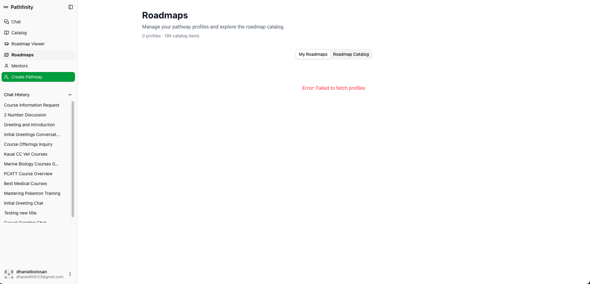

Pathfinity AI College Pathway Advisor

Overview
Pathfinity is an AI-powered college pathway assistant designed to help students devise personalized educational roadmaps based on their circumstances, interests, and career goals. The application provides direct access to real, currently-available courses across the University of Hawaii system, combined with AI-driven pathway planning and labor market insights. The system is specialized for UH’s institutional context and integrated course offerings across all UH campuses.
A link to the source code repository: phuong808/Pathfinity-1
Project Features and Team Work
The project includes the following core capabilities:
- An AI chat assistant that engages students in dialogue to understand their academic goals, constraints, and preferences, then generates tailored degree pathways.
- Integration with the U.S. Department of Education College Scorecard API for real institutional data including admission rates, costs, earnings, and demographics.
- Access to comprehensive course catalogs across University of Hawaii campuses: UH Mānoa, UH Hilo, UH West Oʻahu, UH Maui College, and the University of Hawaii Community Colleges (Kapiʻolani CC, Honolulu CC, Leeward CC, Windward CC, Hawaiʻi CC, Kauaʻi CC).
- Semantic search and embedding-based course discovery, allowing students to find courses relevant to their interests and learning outcomes.
- Automatic roadmap generation that pulls real degree pathway templates and substitutes electives based on student preferences.
- Lightcast API integration to provide labor market insights and career trajectory data for different degree programs.
- Persistent saved roadmaps tied to user profiles, enabling students to revisit and adjust pathways over multiple sessions.
- A modern, responsive UI built with Next.js, shadcn/ui, and Tailwind CSS for an intuitive pathway-building experience.
- Multi-factor authentication infrastructure supporting email/password and OAuth (GitHub, Google) for secure user account management.
Project Outcomes
Pathfinity demonstrates how AI and real-time data integration can demystify college planning. By combining conversational AI, comprehensive course catalogs, real pathway templates, and labor market context, the system empowers students to make informed educational decisions aligned with their personal circumstances and career aspirations. The project shows a practical pathway from student input to personalized, actionable degree roadmaps grounded in actual institutional offerings.